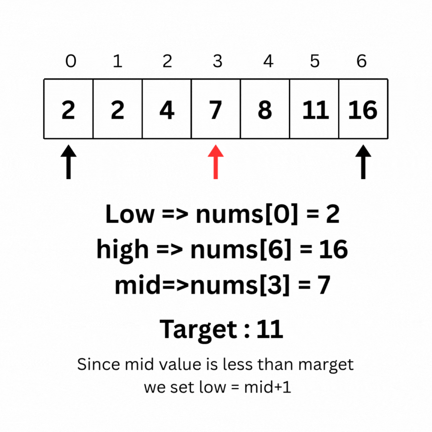

A common method for searching an element in an array is to use a for loop that iterates through each element. This technique is known as Linear Search:
Linear Search is effective for unsorted arrays. However, for sorted arrays, Binary Search is significantly more efficient — with a time complexity of O(n) for linear search versus O(log n) for binary search.
Binary Search is an algorithm used on sorted arrays that works by repeatedly dividing the search interval in half to find the target element efficiently.
Here is the intuition behind Binary search on the same array as above:
Code for the above operation:
int low = 0, high = 6, ans = -1;
while (low <= high) {
int mid = (low + high) / 2;
if (nums[mid] == target) {
ans = mid;
break;
}
if (nums[mid] > target) {
high = mid - 1;
} else {
low = mid + 1;
}
}
The C++ STL provides the following functions to assist with binary search operations:
lower_bound: Returns an iterator pointing to the first element in the range that is greater than or equal to x.upper_bound: Returns an iterator pointing to the first element in the range that is strictly greater than x.equal_range: Returns a pair of iterators—lower_bound(x) and upper_bound(x).